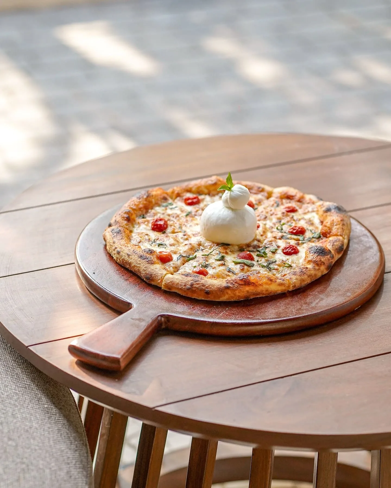
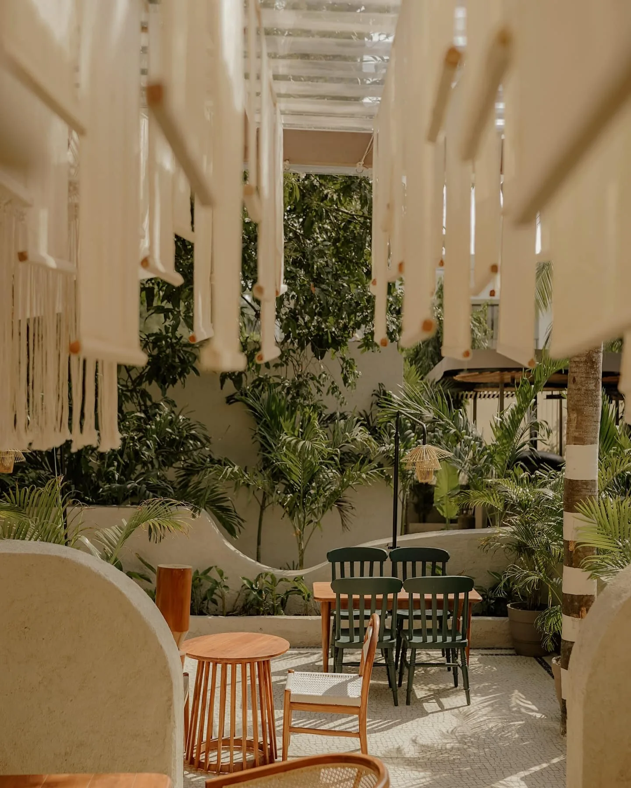
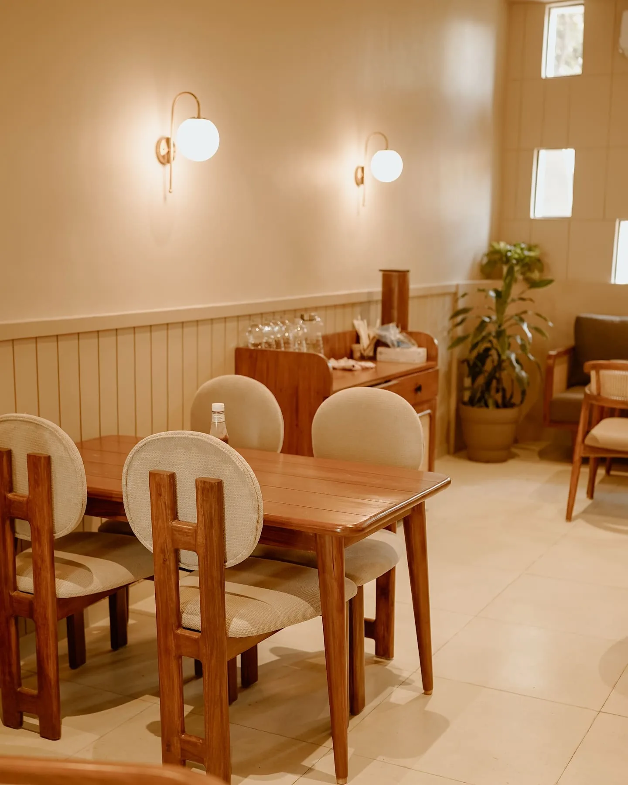

THE PLACE
A green pause
on Dumas Road.
Social Blend Dumas brings a wide vegetarian café menu into a calm, design-led space near Jukamata Temple.
Move between warm indoor tables and the open-air garden. Settle in for pizzas and pasta, a fusion plate, a cold coffee or a bright mocktail—the menu is built for groups with different cravings.
Open every day until midnight, it works just as easily for an unhurried lunch as it does for a late-evening catch-up.